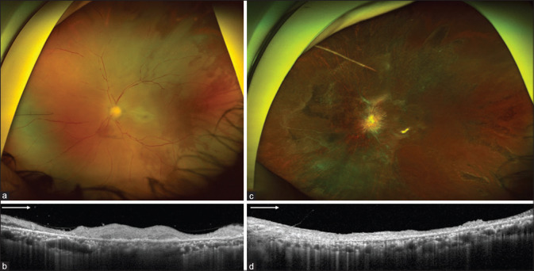
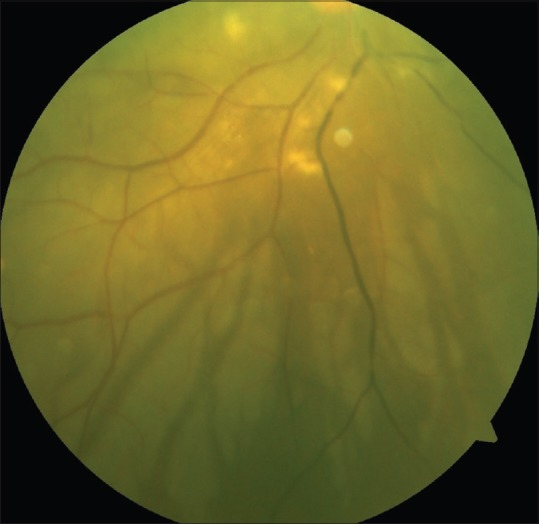
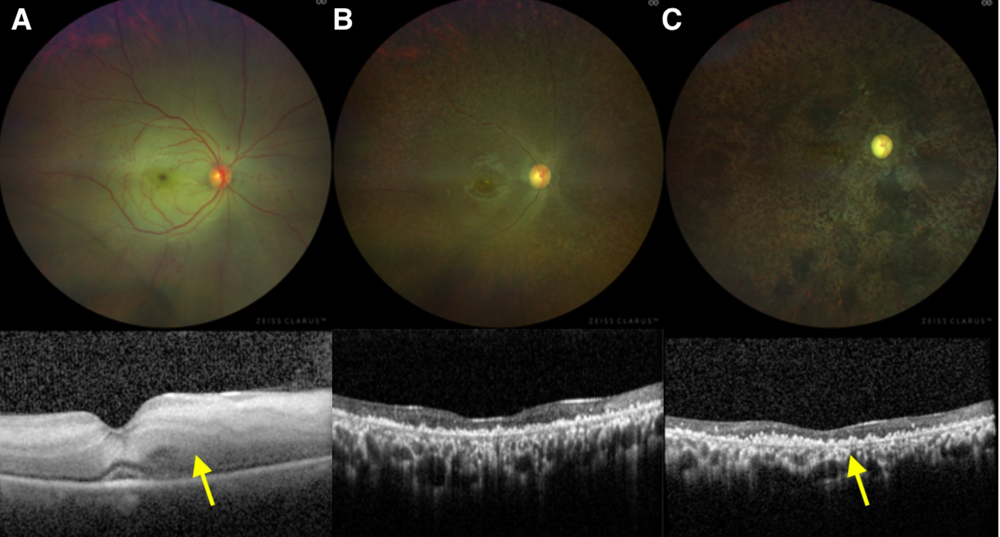
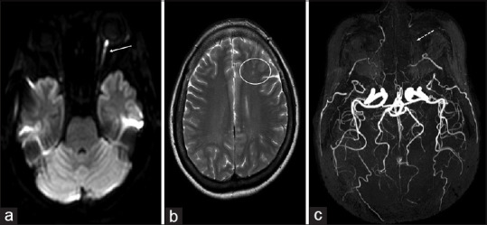
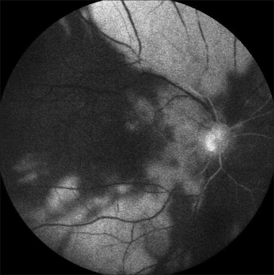

278 — Tắc động mạch mắt (OAO): mất CẢ võng mạc và hắc mạc, nên KHÔNG có điểm đỏ anh đào / Ophthalmic artery occlusion
Tags: pattern:tac-mach-vong-mac pattern:nhoi-mau-vong-mac pattern:thieu-mau-hac-mac vung:vong-mac vung:hac-mac vung:than-kinh-thi vung:tien-phong vung:mat vung:dong-mach-canh protocol:OCT protocol:FFA protocol:ICGA protocol:CTA-co-can-quang protocol:MRA protocol:MRI-DWI
Mức chắc chắn (certainty): tổng hợp y văn (literature synthesis) — 1 bài tổng quan về tắc động mạch võng mạc (Medicina 2024, PMC11052062, CC BY 4.0), 2 ca nguyên văn về OAO (Indian J Ophthalmol 2020, PMC7774192, CC BY-NC-SA 4.0; Indian J Ophthalmol 2017, PMC5678308, CC BY-NC-SA 4.0) và 1 ca hội chứng khoang hốc mắt gây OAO (Indian J Ophthalmol Case Rep 2021, PMC8312523, CC BY-NC-SA 4.0). Các ca được dẫn nguyên văn, không phải bệnh nhân của nhóm.
Câu chốt: OAO không phải "CRAO nặng hơn" — nó là nhồi máu toàn bộ lãnh thổ động mạch mắt: võng mạc trong (động mạch trung tâm võng mạc), hắc mạc (động mạch mi), thần kinh thị và thường cả đoạn trước nhãn cầu. Ba số phải thuộc: 0,85–2 ca/100.000 dân/năm cho tắc động mạch võng mạc nói chung, trong đó CRAO khoảng 1/100.000, < 2% hai bên; thời gian chịu thiếu máu của võng mạc chỉ ~90 phút (cửa sổ tái tưới máu tới 6 giờ); và 52% ca có nguồn thuyên tắc tim trên siêu âm (van hai lá 26% · van động mạch chủ 38% · cả hai 36%).
1. Tổng quan bệnh học – cơ chế hình ảnh
1.1 Giải phẫu: một động mạch, ba vùng đất
- Động mạch mắt (ophthalmic artery) là nhánh đầu tiên của động mạch cảnh trong, chui qua ống thị rồi tách: động mạch trung tâm võng mạc (CRA — nhánh đầu tiên), động mạch mi sau dài (2) và mi sau ngắn (~10–15), các nhánh cơ, lệ, trên ổ mắt, sàng trước–sau, mi, sống mũi và trên rãnh trán.
- Hệ quả: CRA nuôi võng mạc trong; động mạch mi nuôi hắc mạc, biểu mô sắc tố và đoạn trước nhãn cầu (mống mắt, thể mi). Vì vậy tắc CRA chỉ mất một tầng; tắc động mạch mắt mất mọi tầng.
- Đường thuyên tắc ngắn: động mạch mắt là nhánh đầu tiên của cảnh trong, nên mảng xơ ở cảnh cùng bên hoặc cục huyết khối từ tim đi thẳng vào mắt, không qua mao mạch nào lọc bớt.
1.2 Vì sao KHÔNG có điểm đỏ anh đào — nguyên lý quan trọng nhất của bài
- Trong CRAO (bài 276), hõm trung tâm không có võng mạc trong và được nuôi bởi hắc mạc; hắc mạc vẫn tưới máu → đỏ thẫm lộ ra qua vùng võng mạc quanh hõm đang trắng đục → "điểm đỏ anh đào".
- Trong OAO, động mạch mi cũng bị tắc → hắc mạc không còn tưới máu → không còn "nền đỏ" để lộ ra → mất điểm đỏ anh đào. Đây là dấu hiệu phân biệt tại giường bệnh: trắng đục lan tỏa mà KHÔNG có điểm đỏ + thị lực rất kém → nghĩ OAO, không phải CRAO.
- Vì sao trắng đục rộng và đậm hơn CRAO: tổn thương phối hợp lớp trong (phù tế bào do thiếu máu CRA) và lớp ngoài/biểu mô sắc tố (thiếu máu hắc mạc) → mất cả bộ lọc ánh sáng lẫn lớp tán xạ.
1.3 Vì sao OCT thấy mất CẢ lớp trong và lớp ngoài
- CRAO: tăng phản xạ + dày lớp trong, lớp ngoài còn nguyên (được hắc mạc nuôi) → mất phân lớp lớp trong nhưng lớp ngoài giữ được ở giai đoạn muộn.
- OAO: cả hai nguồn nuôi cùng mất → OCT cấp có tăng phản xạ lớp trong + dải giảm phản xạ lớp ngoài (ca Amalric: "tăng phản xạ lớp trong võng mạc với dải giảm phản xạ ở lớp ngoài"), và ca sau tiêm filler cho thấy mất toàn bộ các lớp võng mạc ngay lần đầu. Về muộn: teo cả võng mạc và hắc mạc — hắc mạc teo là dấu hiếm gặp ở CRAO nhưng đặc trưng của OAO.
- Hệ quả thực hành: OCT một mình không phân biệt được nếu chỉ nhìn "lớp trong tăng phản xạ"; phải đọc có/không tổn thương lớp ngoài – hắc mạc và đối chiếu màu đáy mắt + điểm đỏ anh đào.
1.4 Vì sao đoạn trước nhãn cầu cũng bị — và vì sao dễ chẩn đoán nhầm viêm màng bồ đào
- Động mạch mi sau dài và các nhánh cơ nuôi mống mắt – thể mi – tiền phòng. Khi tắc, xuất hiện phù giác mạc, tinh thể giả viêm ở nội mô (KP), flare 1+, tế bào 1+, nhãn áp có thể tăng hoặc giảm — ca Amalric: 28 mmHg ở mắt bệnh so với 8 mmHg mắt lành.
- Vì vậy bệnh cảnh "mắt đỏ, đau, thị lực mất, tiền phòng có tế bào" rất dễ bị gọi là viêm màng bồ đào cấp và điều trị bằng steroid — trong khi thực chất là thiếu máu đoạn trước. Dấu hiệu dẫn đường: da vùng tiêm hoại tử (nếu do filler), đồng tử giãn không đáp ứng, RAPD dương tính, và đáy mắt trắng đục không điểm đỏ.
1.5 Nguyên nhân và số liệu dịch tễ
| Nhóm nguyên nhân | Số liệu / cơ chế |
|---|---|
| Thuyên tắc từ cảnh | Mảng xơ cảnh trong nặng ở tới 40% bệnh nhân tắc động mạch võng mạc cấp; > 90% ca nhiều thuyên tắc có tắc cảnh cùng bên nặng, 40% hẹp hoàn toàn |
| Thuyên tắc từ tim | Siêu âm tim phát hiện nguồn ở 52%: van hai lá 26%, van động mạch chủ 38%, cả hai 36%; 2% có lỗ bầu dục thông |
| Viêm mạch | 1–5% tổng số, chủ yếu GCA; phải loại trừ ở mọi bệnh nhân > 50 tuổi |
| Tăng đông | Hội chứng kháng phospholipid, tăng homocysteine, bệnh tăng sinh tủy (ca tăng tiểu cầu tiên phát biểu hiện bằng OAO) |
| Do thủ thuật | Tiêm filler vùng gian mày/mũi, hội chứng khoang hốc mắt sau mổ sọ, nút mạch/tiêm quanh hốc mắt |
| Co mạch / khác | Migraine, cocain, tụt huyết áp, chấn thương hốc mắt |
- Filler: nhóm filler vĩnh viễn/bán vĩnh viễn gây biến chứng thị giác 71,4% trong một tổng quan 2015; hoại tử da gặp 69% với acid hyaluronic so với 23% với mỡ tự thân; mỡ tự thân có tiên lượng thị giác xấu hơn và nhồi máu não phối hợp nhiều hơn. Vùng gian mày nguy hiểm vì mạch trên rãnh trán – trên ổ mắt nằm nông và tuần hoàn bàng hệ hạn chế.
- Hội chứng khoang hốc mắt (OCS): ca sau mổ sọ trán — nhãn áp 53 mmHg, lồi mắt, liệt vận nhãn hoàn toàn, thị lực HM → LP → NLP trong vài giờ; giải áp bằng cắt góc mi dưới + cắt dây chằng mi dưới không cứu được mắt.
2. Mẫu hình + chẩn đoán phân biệt theo cơ chế (Gamut)
- Mẫu hình 1 — toàn bộ võng mạc trắng đục, KHÔNG điểm đỏ, mạch máu đứt đoạn (box-carring): OAO do thuyên tắc cảnh/tim, do filler.
- Mẫu hình 2 — trắng đục từng tam giác ở vùng ngoại vi (đáy tam giác hướng ra xích đạo, đỉnh hướng về cực sau): dấu Amalric — thiếu máu động mạch mi sau; khi kèm trắng đục cực sau → đã tiến tới OAO.
- Mẫu hình 3 — mắt đỏ đau, tiền phòng có tế bào, nhãn áp lệch hai mắt, đồng tử giãn: thiếu máu đoạn trước trong OAO.
- Mẫu hình 4 — kèm nhồi máu thần kinh thị (DWI sáng dọc thị giác) và nhồi máu não nhiều ổ: "mắt là cửa sổ của não" — cùng nguồn thuyên tắc.
- Gamut theo nguyên nhân: thuyên tắc cảnh ↔ thuyên tắc tim ↔ viêm mạch (GCA) ↔ tăng đông ↔ thủ thuật (filler, OCS, nút mạch) ↔ co mạch.
- Mnemonic 5T: Thrombus/embolus (cảnh–tim), Temporal arteritis (GCA), Thrombophilia, Trauma/thủ thuật (filler, OCS), Tone (co mạch, tụt áp).
3. Bảng so sánh phân biệt (ma trận đối chiếu)
| Thực thể (entity) | Hình ảnh điển hình | Chốt vào (rule-in) | Chốt loại (rule-out) | Gợi ý xác nhận |
|---|---|---|---|---|
| OAO | Trắng đục lan tỏa cả cực sau + ngoại vi, KHÔNG điểm đỏ anh đào, tam giác Amalric, OCT mất cả lớp trong và lớp ngoài, FFA chậm cả tuần hoàn võng mạc và hắc mạc | Không có điểm đỏ + trắng đục rộng + OCT mất lớp ngoài + thiếu máu đoạn trước | Có điểm đỏ anh đào rõ → nghĩ CRAO; hắc mạc còn tưới máu trên ICGA → không phải OAO toàn bộ | MRA/CTA: động mạch mắt không hiện; đoạn trước: KP, flare, IOP lệch |
| CRAO (bài 276) | Trắng đục cực sau + điểm đỏ anh đào, OCT chỉ lớp trong, hắc mạc còn tưới máu | Điểm đỏ anh đào + tổn thương OCT giới hạn lớp trong | Trắng đục cả ngoại vi + mất lớp ngoài → OAO | FFA: hắc mạc đổ đầy bình thường |
| BRAO | Trắng đục một vùng theo nhánh, có thể thấy thuyên tắc trong lòng mạch, thị trường khuyết góc phần tư | Khu trú theo lãnh thổ một nhánh + thuyên tắc nhìn thấy | Trắng đục toàn cực sau → CRAO/OAO | FFA: mạch nhánh không đổ thuốc |
| Tắc động mạch mi sau (Amalric) | Tam giác trắng đục, FFA: tam giác tăng huỳnh quang từ ~1 phút, rò muộn; ICGA: chậm đổ thuốc hắc mạc nhưng KHÔNG thấy tam giác | Tam giác điển hình + ICGA không tương ứng | Tam giác trên ICGA → nghĩ tổn thương hắc mạc thực thể khác | FFA + ICGA đồng thời |
| OIS (bài 274) | Thể mạn: xuất huyết, tân mạch mống mắt/góc, đau; FFA chậm tưới máu toàn nhãn | Tân mạch mống mắt + hẹp cảnh ≥ 70% | Khởi phát cấp, trắng đục rực → OAO | Doppler cảnh, FFA |
| AION (bài 435) | Phù đĩa thị nhợt từng phần, thị trường khuyết cao (altitudinal), không trắng đục cực sau | Phù đĩa thị + khuyết thị trường cao | Trắng đục võng mạc lan tỏa → tắc động mạch | Đĩa thị, thị trường, ESR/CRP nếu > 50 tuổi |
| Viêm màng bồ đào cấp | Tế bào tiền phòng, KP, dính mống mắt; đáy mắt có thể bình thường | Tế bào tiền phòng + phản ứng mống mắt | Thị lực mất đột ngột + RAPD + đáy mắt trắng đục → không phải viêm đơn thuần | Soi đáy mắt giãn đồng tử, OCT, FFA |

Bệnh nhân nữ 51 tuổi, tiêm acid hyaluronic vùng gian mày, mất thị lực NGAY sau tiêm. (a) Ảnh tiếp xúc siêu rộng: trắng đục võng mạc, phù đĩa thị, mạch máu teo nhỏ và box-carring, không có điểm đỏ anh đào. (b) OCT: mất toàn bộ các lớp võng mạc. (c, d) Sau 6 tháng: teo – xơ hóa lan tỏa, mạch "ma" (ghost vessels), OCT teo toàn bộ. Nguồn: Cho HH, Ma DJ, Kim MS, Cho IH. Indian J Ophthalmol 2020;68:2512 — PMC7774192, CC BY-NC-SA 4.0, ảnh nguyên bản.Dấu hiệu Amalric — cách đọc đúng
- Amalric mô tả tam giác trắng đục ở bệnh nhân tắc động mạch mi sau; mô hình thực nghiệm bằng đốt động mạch mi sau tái tạo đúng tổn thương này.
- Hình học: đáy tam giác hướng ra xích đạo, đỉnh hướng về cực sau — ngược với "nan hoa" của bệnh võng mạc tăng huyết áp.
- Nghịch lý cần nhớ: trên FFA tam giác tăng huỳnh quang từ khoảng 1 phút và rò ở thì muộn, nhưng trên ICGA (nhìn hắc mạc) KHÔNG thấy — nghĩa là tổn thương không nằm ở hắc mạc mà ở lớp võng mạc ngoài / biểu mô sắc tố do thiếu máu hắc mạc gây ra; ICGA chỉ cho thấy chậm đổ thuốc mạch hắc mạc lớn.

Mắt phải: box-carring động mạch, tĩnh mạch ứ, trắng đục cực sau không có điểm đỏ anh đào, và các tam giác trắng đục ở ngoại vi trên/dưới/thái dương. Thị lực NLP. Nguồn: Hande P, Sinha B, Nayak S, Srinivasan S, Shetty J. Indian J Ophthalmol 2017;65:1033 — PMC5678308, CC BY-NC-SA 4.0, ảnh nguyên bản.4. Protocol chụp + xử trí cấp cứu
4.1 Chẩn đoán hình ảnh theo thứ tự
- Đáy mắt giãn đồng tử + chụp ảnh siêu rộng (UWF): trắng đục có/không điểm đỏ; tìm tam giác Amalric, xuất huyết, thuyên tắc nhìn thấy.
- SD-OCT hoàng điểm: xác định lớp nào mất — chỉ lớp trong (CRAO) hay cả lớp trong + lớp ngoài (OAO); đo độ dày trung tâm.
- FFA: thời gian tay–võng mạc kéo dài, hắc mạc không đổ đầy, tam giác tăng huỳnh quang rò muộn; ca Amalric: động mạch mi–võng mạc đổ thuốc ở 57 giây nhưng phần lớn võng mạc không tưới máu.
- ICGA: chậm đổ thuốc hắc mạc; không thấy tam giác → loại tổn thương hắc mạc thực thể.
- MRA/CTA cảnh–não + hốc mắt: tìm động mạch mắt không hiện được, hẹp/tắc cảnh trong, giả phình; ca filler: động mạch mắt, trên ổ mắt và trên rãnh trán đều không thấy trên MRA.
- MRI sọ có DWI: nhồi máu thần kinh thị (DWI sáng dọc thị giác) và nhồi máu não nhiều ổ. Trong đoàn hệ 213 bệnh nhân tắc mạch mắt, 23% có nhồi máu não dù 90% không có triệu chứng thần kinh; ở 77 bệnh nhân CRAO, 14% có đột quỵ, 5 ca trong vòng 1 tháng.
flowchart TD
A["Mất thị lực MỘT bên, đột ngột, không đau"] --> B["Đáy mắt giãn đồng tử + OCT + RAPD + đo nhãn áp"]
B --> C{"Có điểm đỏ anh đào?"}
C -->|Có| D["CRAO: xử trí như đột quỵ, xem bài 276"]
C -->|Không| E{"Trắng đục lan tỏa + OCT mất cả lớp ngoài?"}
E -->|Có| F["OAO: cấp cứu mạch máu mắt"]
E -->|Không| G["Tam giác trắng đục ngoại vi?"]
G -->|Có| H["Dấu Amalric: thiếu máu động mạch mi sau"]
H --> F
G -->|Không| I["Soi lại: CRVO, BRAO, OIS, Purtscher, viêm thị"]
F --> J["FFA + ICGA + OCT ngay; MRA/CTA cảnh và hốc mắt; MRI DWI sọ"]
J --> K{"Tiền sử tiêm filler hoặc mổ hốc mắt trong vài giờ?"}
K -->|Có| L["Hyaluronidase liều cao quanh hốc mắt; giải áp khoang nếu nhãn áp cao; gọi can thiệp mạch"]
K -->|Không| M["Nghi GCA nếu > 50 tuổi: ESR + CRP, methylprednisolone TM 500-1000 mg x 3 ngày"]
M --> N["Đường đột quỵ: Doppler cảnh, siêu âm tim, ECG Holter, tầm soát tăng đông"]
L --> N
4.2 Xử trí — cùng nguyên lý với CRAO nhưng tiên lượng xấu hơn
- Tư thế nằm ngửa, xoa nhãn cầu 10–15 giây ép / thả, lặp 3–5 phút (làm giãn động mạch và dao động nhãn áp, có thể đẩy thuyên tắc ra ngoại vi).
- Hạ nhãn áp: apraclonidine 1%, timolol 0,5%, acetazolamide TM 500 mg, mannitol/glycerol nếu cần nhanh. Chọc tiền phòng: không chứng minh có lợi (Atebara; Fieß) và có nguy cơ hạ nhãn áp, viêm nội nhãn.
- Carbogen 5% CO₂ / 95% O₂ và liệu pháp oxy cao áp (HBOT): nếu bắt đầu trong 8 giờ, một chuỗi ca báo 83% cải thiện thị lực — hợp lý vì oxy khuếch tán từ hắc mạc nuôi lớp ngoài, nhưng ở OAO hắc mạc không tưới máu nên kỳ vọng thấp hơn.
- Tiêu sợi huyết TM/động mạch: chỉ bàn trong đơn vị đột quỵ, không có RCT dương tính (xem bài 276); không được chậm trễ workup nguyên nhân.
- Nghi GCA: methylprednisolone 500–1.000 mg/ngày × 3 ngày rồi prednisone liều cao; aspirin 75 mg/ngày; không chờ sinh thiết (bài 435).
- Filler: hyaluronidase liều cao quanh hốc mắt/đường đi mạch càng sớm càng tốt; ca dưới đây không dùng vì đã 1 tuần — nhấn mạnh cửa sổ vài giờ.
- OCS: cắt góc mi + cắt dây chằng mi dưới giải áp; đo nhãn áp ngay ở mọi ca mù sau mổ/mê ở tư thế sấp.
- Theo dõi muộn: tân mạch mống mắt/góc (tới 18% sau CRAO; OAO thường cao hơn) → khám lại 4 tháng đầu, soi góc, nhãn áp; teo nhãn là kết cục của OAO nặng.
5. Biến thể bình thường và cạm bẫy
- Bảo tồn động mạch mi–võng mạc (gặp ở 14% theo Hayreh, tới 30% mắt có nhánh này) giữ được thị lực trung tâm trong CRAO — nhưng không cứu được trong OAO vì chính động mạch mi cũng tắc. Thấy "vùng hoàng điểm hồng" không loại trừ OAO.
- Điểm đỏ anh đào "mất" có thể do đục thủy tinh thể dày hoặc xuất huyết dịch kính che — đừng kết luận OAO chỉ vì không thấy điểm đỏ; ngược lại, đừng bỏ OAO khi "không thấy điểm đỏ" mà không giải thích.
- Tam giác Amalric dễ bị đọc là đốm bông (cotton wool spots): đốm bông nhỏ, bờ tua, nằm dọc bó sợi thần kinh; tam giác lớn, hình học rõ, đáy ra ngoại vi. FFA/ICGA phân định.
- Thiếu máu đoạn trước bị chẩn đoán nhầm viêm màng bồ đào → steroid làm chậm chẩn đoán mạch máu; luôn đo RAPD và nhãn áp hai mắt, tìm hoại tử da vùng tiêm.
- Filler vùng gian mày/mũi: mạch nông, bàng hệ ít; đau dữ dội ngay khi tiêm + mờ mắt + hoại tử da là bộ ba phải hành động trong giờ, không phải "theo dõi 24 giờ".
- OCS sau mổ sọ/mổ dài tư thế sấp: mắt có thể bình thường lúc mở mắt rồi xấu trong 1 giờ; nhãn áp 53 mmHg là chốt. Không giải áp kịp → NLP vĩnh viễn.
- Sai lầm hệ thống: điều trị mắt xong mà không tìm nguồn (cảnh, tim, GCA, tăng đông) → bỏ sót đột quỵ não trong vài ngày đầu.

(A) Tuần 1: phù võng mạc lan tỏa, mờ các lớp. (B) Tháng 2: võng mạc mỏng dần. (C) Tháng 3: teo võng mạc và hắc mạc, biến đổi sắc tố dạng lốm đốm (mũi tên) — dấu teo hắc mạc đặc trưng của OAO, khác CRAO. Nguồn: DeMaria L, Tran AQ, Tooley AA, Abdelhakim A, Belinsky I, Kim E. Indian J Ophthalmol Case Rep 2021;1:280 — PMC8312523, CC BY-NC-SA 4.0, ảnh nguyên bản.6. Tự lượng giá — Blind Quiz ngay trên trang tĩnh
Ca 1 — Nữ 51 tuổi, tiêm filler vùng gian mày, mất thị lực ngay sau tiêm.
- Gợi ý lâm sàng: da sống mũi và trán hoại tử; nhãn áp 17 mmHg; RAPD dương tính; đoạn trước "bình thường".
- Câu hỏi: Vì sao không có điểm đỏ anh đào? OCT khác CRAO ở đâu? Cần chụp gì để chứng minh tắc ở đâu?
Bấm để hiện đáp án
- Dấu hiệu: trắng đục võng mạc lan tỏa, phù đĩa thị, mạch teo + box-carring, không điểm đỏ anh đào; OCT mất toàn bộ các lớp (cả lớp ngoài). Sau 6 tháng: teo – xơ hóa, mạch ma.
- Chẩn đoán: tắc động mạch mắt do filler — hắc mạc cũng thiếu máu nên không có "nền đỏ" của hõm; lớp ngoài chết vì hắc mạc không tưới máu.
- Chứng minh: MRA — động mạch mắt, trên ổ mắt, trên rãnh trán không hiện; MRI DWI — nhồi máu thần kinh thị + nhồi máu não nhiều ổ; FFA chậm cả tuần hoàn võng mạc và hắc mạc.
- Đối chiếu ảnh MRI:

- Nguồn: Cho HH, Ma DJ, Kim MS, Cho IH. Indian J Ophthalmol 2020;68:2512 — PMC7774192, CC BY-NC-SA 4.0.
Ca 2 — Nam 75 tuổi, mù đột ngột 5 ngày, tiền sử hút thuốc 40 năm, claudication cách đây 1 tháng.
- Gợi ý: thị lực NLP; tiền phòng có KP, flare 1+, tế bào 1+; nhãn áp 28 mmHg (mắt lành 8 mmHg).
- Câu hỏi: Ba dấu hiệu trên ảnh? Vì sao tiền phòng có tế bào? Dấu này tên gì và nói lên điều gì về mạch máu?
Bấm để hiện đáp án
- Dấu hiệu: box-carring, tĩnh mạch ứ, trắng đục cực sau không điểm đỏ, và ba tam giác trắng đục ngoại vi (đáy ra xích đạo, đỉnh về cực sau) = dấu Amalric (thiếu máu động mạch mi sau).
- Tiền phòng có tế bào = thiếu máu đoạn trước (động mạch mi nuôi mống mắt – thể mi), không phải viêm màng bồ đào nguyên phát; nhãn áp lệch 20 mmHg giữa hai mắt cũng là dấu hiệu.
- FFA: tay–võng mạc kéo dài, động mạch mi–võng mạc đổ thuốc ở 57 giây, phần lớn võng mạc không tưới máu; tam giác tăng huỳnh quang ~1 phút, rò muộn; ICGA không thấy tam giác nhưng chậm đổ thuốc hắc mạc.

- Nguồn: Hande P, Sinha B, Nayak S, Srinivasan S, Shetty J. Indian J Ophthalmol 2017;65:1033 — PMC5678308, CC BY-NC-SA 4.0.
Ca 3 — Nữ 32 tuổi, sau mổ sọ trán 8 giờ, mở mắt thấy mờ rồi mất thị lực trong 1 giờ, lồi mắt, liệt vận nhãn.
- Gợi ý: nhãn áp 53 mmHg, RAPD mạnh, đĩa thị còn tưới máu; đã cắt góc mi + cắt dây chằng mi dưới và dùng methylprednisolone 1 g × 3 ngày.
- Câu hỏi: Cơ chế gây tắc? Vì sao vẫn NLP? Ảnh tháng 3 cho thấy tầng nào bị teo và vì sao đó là chìa khóa phân biệt với CRAO?
Bấm để hiện đáp án
- Cơ chế: hội chứng khoang hốc mắt — vạt cân cơ kéo + tư thế đầu nghiêng → ứ tĩnh mạch hốc mắt, tăng áp lực trong ổ mắt, chèn ép động mạch mắt ở đỉnh hốc mắt. Cơ chế gián tiếp (tăng áp lực), không phải thuyên tắc.
- Vì sao NLP: tổn thương thần kinh thị + võng mạc + hắc mạc cùng lúc; giải áp muộn (sau khi đã thiếu máu > ngưỡng chịu đựng).
- Ảnh C: teo võng mạc VÀ teo hắc mạc (lốm đốm sắc tố) — dấu hai tầng này là chìa khóa của OAO; CRAO chỉ teo lớp trong, hắc mạc nguyên.
- Nguồn: DeMaria L, Tran AQ, Tooley AA, Abdelhakim A, Belinsky I, Kim E. Indian J Ophthalmol Case Rep 2021;1:280 — PMC8312523, CC BY-NC-SA 4.0.
Bài liên quan chéo
- 276 – Tắc động mạch trung tâm võng mạc (CRAO) (thể một tầng: điểm đỏ anh đào, OCT chỉ lớp trong)
- 274 – Thiếu máu mắt (OIS) và glôcôm tân mạch (thể mạn của cùng lãnh thổ)
- 444 – Tắc mạch võng mạc: CRVO/BRVO vs CRAO (ma trận tắc tĩnh mạch – động mạch)
- 435 – GCA và AAION vs NAION (nguyên nhân viêm mạch, steroid ngay)
- 453 – Bệnh võng mạc tăng huyết áp và thiếu máu (nền mạch máu, đốm bông)
- 441 – OCT hoàng điểm (đọc phân lớp để phân biệt lớp trong – lớp ngoài)
- 211 – Đột quỵ não (cùng nguồn thuyên tắc, cùng đường xử trí)
- 400 – Tổng quan Mắt & thị giác
Ảnh
278_oao_day-mat-OCT_PMC7774192.jpg— Fig. 1 (UWF + OCT cấp và 6 tháng, ca filler).278_oao_MRI-MRA_PMC7774192.jpg— Fig. 2 (DWI thần kinh thị, FLAIR nhồi máu não, MRA mất động mạch mắt).278_oao_amalric_day-mat_PMC5678308.jpg— Fig. 3 (dấu Amalric).278_oao_amalric_FFA_PMC5678308.jpg— Fig. 5 (FFA thì muộn: tam giác tăng huỳnh quang, rò).278_oao_teo-hac-mac_PMC8312523.jpg— Fig. 3 (OAO do OCS: phù tuần 1 → teo võng mạc + hắc mạc tháng 3).- Tất cả nguyên bản, không crop, không ghép (CC BY-NC-SA 4.0 không cho tạo tác phẩm phái sinh trong repo này). Chi tiết tác giả + giấy phép:
images/CREDITS.md.
Không dùng để chẩn đoán độc lập khi chưa có người hướng dẫn.